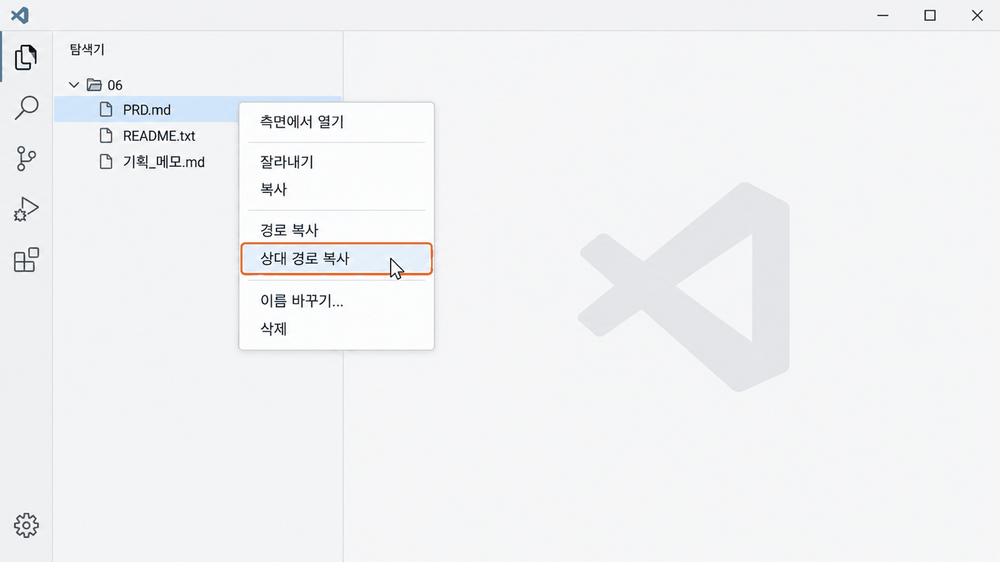
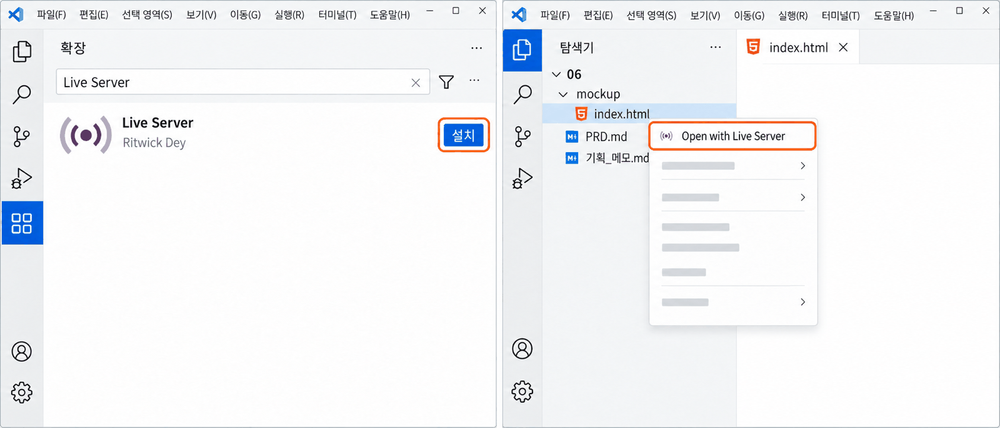

서비스 제작 계획서(PRD)
시작하기开始编写
服务制作计划书（PRD）
마지막에 목업을 붙여 봅니다.用 6-1 的备忘和 AI 一起写自己的 PRD，
最后给它配上一个模型。
오늘 할 일今天要做的事
오늘은 지난 시간의 메모로 8회에 제출할 PRD를 AI와 함께 씁니다. AI가 메모를 PRD 양식에 옮겨 초안을 만들고, 나는 그 초안을 읽고 내 말로 고칩니다. 마지막에 PRD로 목업을 하나 붙여 봅니다.今天用上节课的备忘，和 AI 一起写第 8 次课要提交的 PRD。AI 把备忘搬进 PRD 样式做出草稿，自己读草稿，用自己的话修改。最后用 PRD 配上一个模型。
PRD.md의 1·2·3·4·6항을 AI와 함께 쓰고 끝까지 읽어 보는 것입니다. 목업은 그다음입니다.和 AI 一起写好 PRD.md 的第 1、2、3、4、6 项，并从头读到尾。模型在那之后。
PRD는 무엇을 만들지 적은 약속이다PRD 是写下要做什么的约定 핵심核心
PRD(Product Requirements Document)는 우리말로 서비스 제작 계획서입니다. 누구를 위해 무엇을, 어디까지 만들지 글로 적은 문서입니다. 만드는 사람과 AI가 같은 문서를 보고 일하므로, 적힌 대로 만들고 적힌 대로 확인합니다.PRD（Product Requirements Document）就是服务制作计划书。它用文字写下为谁做什么、做到哪一步。做的人和 AI 看着同一份文件工作，所以照写的做，也照写的检查。
| PRD 항목PRD 项目 | 답하는 질문回答的问题 | 이번 시간에这节课 |
|---|---|---|
| 1. 서비스 기본 정보1. 服务基本信息 | 누구의 어떤 불편을 푸는가解决谁的什么不便 | 쓴다写 |
| 2. 기능 범위2. 功能范围 | 무엇을 만들고, 무엇을 만들지 않는가做什么，不做什么 | 쓴다写 |
| 3. 대표 사용 흐름3. 代表性使用流程 | 사용자는 어떤 순서로 쓰는가用户按什么顺序使用 | 쓴다写 |
| 4. 화면 구성 설명4. 画面构成说明 | 화면에 무엇이 보이는가画面上能看到什么 | 쓴다写 |
| 5. 데이터5. 数据 | 서비스가 무엇을 기억해야 하는가服务要记住什么 | 다음 주에 쓴다下周写 |
| 6. 완성 기준6. 完成标准 | 무엇이 되면 완성인가做到什么算完成 | 1·2번만 쓴다只写第 1、2 条 |
양식의 7. AI 사용과 학생의 판단은 원래 PRD에는 없는 칸입니다. 이 수업에서 AI와 어떻게 일했는지, 무엇을 받아들이고 거절했는지 남기는 기록이고, 8회 평가에서 봅니다.样式里的7. AI 的使用与学生的判断，原本的 PRD 里没有。它记录这门课上怎样和 AI 一起工作、接受和拒绝了什么，第 8 次课评价时会看。
6-1의 메모가 재료이고, PRD는 그 재료를 정해진 순서로 정리한 문서입니다. 나중에 실제 서비스를 만들 때도 AI에게 이 PRD를 보여 주며 일합니다.6-1 的备忘是材料，PRD 是把材料按规定顺序整理好的文件。以后真正做服务时，也是把这份 PRD 给 AI 看着来做。
06 폴더를 열고 PRD.md에 바로 쓴다打开 06 文件夹，直接在 PRD.md 里写
6-1에서 쓰던 06 폴더를 다시 엽니다. 오늘 쓸 파일은 그 안의 PRD.md입니다. 내려받은 내 자료이므로 복사하지 않고 이 파일에 바로 이어서 씁니다.重新打开 6-1 用过的 06 文件夹。今天要写的文件是里面的 PRD.md。这是自己下载的资料，不用复制，直接在这个文件里接着写。
- 탐색기에서
JDH_VibeCoding_자기이름안의06폴더를 오른쪽 클릭하고 Code(으)로 열기를 고른다. 이미 열려 있으면 그대로 쓴다.在资源管理器中右键单击JDH_VibeCoding_자기이름里的06文件夹，选择 Code(으)로 열기（通过 Code 打开）。已经打开的话就直接用。 - 탐색기 맨 위에
06이 보이고, 그 아래기획_메모.md와PRD.md가 보이는지 확인한다.确认资源管理器最上方是06，下面能看到기획_메모.md和PRD.md。 PRD.md를 열어 맨 위의 학생 ID와 이름을 채우고Ctrl+S로 저장한다.打开PRD.md，填上最上方的 학생 ID（学生 ID）和 이름（姓名），按Ctrl+S保存。
양식의 제목(## 1. 서비스 기본 정보 등)과 항목 순서를 지우거나 옮기지 않습니다. 해당하는 내용이 없는 항목은 지우지 말고 없음이라고 적습니다. 파일 이름은 8회에 제출할 때 08_assessment2_학생ID_이름.md로 바꿉니다.不要删除或挪动样式的标题（如 ## 1. 서비스 기본 정보）和项目顺序。没有对应内容的项目不要删，写上 없음（无）。文件名在第 8 次课提交时再改成 08_assessment2_학생ID_이름.md。
6-1에 오지 못했거나 메모를 저장하지 못했다면, 교과서 6-1의 메모 쪽을 보며 여섯 칸을 짧게 먼저 채웁니다. 한 칸에 한 줄이면 충분합니다.如果 6-1 没来上课或没保存备忘，就先看着教材 6-1 的备忘页，把六栏简短填上。每栏一行就够了。
AI에게 파일 이름을 정확히 알려 준다把文件名准确告诉 AI
이제부터 AI와 함께 PRD를 씁니다. 파일 이름이 한 글자만 틀려도 AI는 엉뚱한 파일을 엽니다. 그래서 이름을 손으로 치지 않고 상대 경로 복사로 붙여 넣습니다.从现在起，和 AI 一起写 PRD。文件名错一个字，AI 就会打开别的文件。所以不手打名字，而是用 상대 경로 복사（复制相对路径）粘贴。
- 탐색기에서 내 PRD 파일을 마우스 오른쪽 단추로 누른다.在资源管理器中右键单击自己的 PRD 文件。
- 메뉴에서 상대 경로 복사를 고른다. 경로 복사가 아니다.在菜单中选择 상대 경로 복사（复制相对路径），不是 경로 복사（复制路径）。
- VS Code 터미널에서 줄 끝이
…\06>인지 보고opencode를 연다. 요청문을 쓸 때Ctrl+V로 붙여 넣는다.在 VS Code 终端确认提示符结尾是…\06>，打开opencode。写请求时按Ctrl+V粘贴。

경로 복사와 상대 경로 복사는 다르다复制路径和复制相对路径不一样 핵심核心
오른쪽 클릭 메뉴에는 경로 복사와 상대 경로 복사가 나란히 있습니다. 둘 다 파일의 주소를 복사하지만, 주소가 어디에서 출발하는지가 다릅니다.右键菜单里 경로 복사（复制路径）和 상대 경로 복사（复制相对路径）挨在一起。两者都复制文件的地址，但地址从哪里出发不一样。
| 복사 방법复制方式 | 어디에서 출발하나从哪里出发 | 붙여 넣으면粘贴后 |
|---|---|---|
| 경로 복사경로 복사（复制路径） | 컴퓨터의 맨 처음(C:)부터 전체 주소从电脑最开头（C:）起的完整地址 | C:\Users\…\JDH_VibeCoding_…\06\PRD.md |
| 상대 경로 복사상대 경로 복사（复制相对路径） | 지금 VS Code로 연 폴더(06)부터从现在用 VS Code 打开的文件夹（06）起 | PRD.md |
OpenCode는 터미널이 시작된 06 폴더에서 출발해 파일을 찾습니다. 그래서 짧은 상대 경로만으로 정확히 찾아갑니다. 전체 주소에는 내 이름이 들어간 폴더까지 다 적혀 있어 길고, 다른 컴퓨터에서는 맞지 않습니다.OpenCode 从终端启动时所在的 06 文件夹出发找文件，所以只用简短的相对路径就能准确找到。完整地址里连带有自己名字的文件夹都写着，又长，换台电脑就不对了。
06\PRD.md처럼 앞에 폴더 이름이 붙으면 VS Code가 06의 한 단계 위를 연 것입니다. 06 폴더를 오른쪽 클릭해 Code(으)로 열기로 다시 엽니다.如果前面带着文件夹名，比如 06\PRD.md，说明 VS Code 打开的是 06 的上一层。右键单击 06 文件夹，用 Code(으)로 열기 重新打开。
AI와 함께 메모를 PRD로 옮긴다和 AI 一起把备忘搬进 PRD
메모의 여섯 칸을 PRD 양식에 옮기는 일은 AI에게 맡깁니다. 다만 메모에 없는 내용을 지어내지 않게 하고, 다 옮기면 내가 처음부터 읽고 고칩니다. 아래 요청문을 복사해 OpenCode에 보냅니다.把备忘六栏搬进 PRD 样式的事交给 AI。不过不让它编造备忘里没有的内容，搬完后自己从头读一遍再修改。复制下面的请求发给 OpenCode。
기획_메모.md를 읽고, 그 내용을 PRD.md의 1·2·3·6항에 옮겨 적어 줘. 메모에 없는 내용은 지어내지 말고 「(확인 필요)」라고 적어 줘. 4·5·7항과 양식의 제목·순서는 그대로 둬. 다른 파일은 고치지 마. PRD.md 파일에 직접 저장하고, 무엇을 어디에 옮겼는지 세 줄로 알려 줘.
请读 기획_메모.md，把内容搬写到 PRD.md 的第 1、2、3、6 项。 备忘里没有的内容不要编，写「(需要确认)」。 第 4、5、7 项和样式的标题、顺序保持不变。不要修改其他文件。 直接保存到 PRD.md 文件里，并用三行告诉我把什么搬到了哪里。
| 옮긴 뒤 내가 확인할 것搬完后自己要确认的 | 이렇게 고친다这样改 |
|---|---|
| 1항 사용자第 1 项 用户 | 「예상 사용자」와 「사용하는 상황」 두 줄로 나뉘었나是否拆成了「预期用户」和「使用情境」两行 |
| 2항 기능 범위第 2 项 功能范围 | 메모에 없던 기능이 들어왔으면 지운다 · 「만들지 않을 기능」은 내가 적는다混进了备忘里没有的功能就删掉 · 「不做的功能」自己写 |
| 3항 흐름第 3 项 流程 | 「~하면 ~가 보인다」로 읽히나读起来是不是「做……后，看到……」 |
| 「(확인 필요)」「(需要确认)」 | 내 말로 채운다用自己的话补上 |
화면 구성 설명을 처음 쓴다第一次写画面构成说明
4. 화면 구성 설명은 메모에 없던 항목이라 오늘 처음 씁니다. 처음 보는 사람이 화면에 무엇이 있는지 알 수 있게 여섯 줄로 씁니다.4. 画面构成说明是备忘里没有的项目，今天第一次写。用六行写清楚，让第一次看的人也知道画面上有什么。
## 4. 화면 구성 설명 - 화면 이름: 하나 뽑기 화면 - 화면을 처음 열면 보이는 내용: 제목, "외울 항목을 한 줄에 하나씩 적어 주세요"라는 안내, 빈 입력칸 - 사용자가 입력하거나 선택하는 것: 외울 항목 여러 줄 - 사용자가 누르는 것: 하나 뽑기 버튼 - 동작한 뒤 나타나는 결과: 버튼 아래에 뽑힌 항목 하나가 크게 나타난다 - 입력이 없거나 잘못되었을 때 나타나는 안내: "먼저 항목을 적어 주세요"가 버튼 아래에 나타난다
## 4. 화면 구성 설명 （画面构成说明） - 화면 이름（画面名称）: 抽一个画面 - 화면을 처음 열면 보이는 내용（一打开就看到的）: 标题、“请一行写一个要背的项目”的提示、空输入框 - 사용자가 입력하거나 선택하는 것（输入或选择的）: 几行要背的项目 - 사용자가 누르는 것（按的东西）: 抽一个按钮 - 동작한 뒤 나타나는 결과（动作后的结果）: 按钮下方大字显示抽到的一个项目 - 입력이 없거나 잘못되었을 때 나타나는 안내（没有输入或输入错误时的提示）: 按钮下方出现“请先写下项目”
그림은 붙이지 않고 글로만 씁니다. 색·글꼴은 적지 않습니다.不附图，只用文字写。不写颜色和字体。
AI에게 PRD를 읽히고 질문을 받는다让 AI 读 PRD，向我提问 핵심核心
초안을 고치고 4항까지 썼다면 AI에게 PRD를 읽혀 질문과 제안을 받습니다. AI가 문서를 직접 고쳐도 괜찮습니다. 중요한 것은 AI가 묻고 고친 내용을 내가 끝까지 읽고 검토하는 것입니다. 이번 학기 내내 이 습관을 들입니다.改好草稿、写完第 4 项后，让 AI 读 PRD，接受它的提问和建议。AI 直接修改文件也没关系。重要的是，AI 问的、改的内容，自己要从头读到尾、认真检查。这个学期一直要养成这个习惯。
PRD.md를 읽고, 흐릿하거나 서로 맞지 않는 곳을 하나씩 물어봐 줘. 고치면 좋을 점이 있으면 제안해 줘.
请读 PRD.md，把模糊或彼此对不上的地方一个一个问我。
有值得修改的地方就提出建议。AI의 질문·제안·고친 곳을 끝까지 읽고, 받아들일지 내가 정한다把 AI 的提问、建议和改动读到最后，接不接受由自己定
읽지 않고 넘어간다. AI가 바꾼 문장과 권한 기능을 확인 없이 둔다不读就跳过。AI 改的句子和建议的功能不检查就留着
AI가 제안한 것과 내가 정한 것을 적는다写下 AI 的提议和自己的决定
AI와 함께 쓰고 다듬으면서 받아들인 것과 거절한 것을 PRD의 7. AI 사용과 학생의 판단에 내 말로 적습니다. 8회 평가에서는 이 판단을 내가 설명할 수 있는지 봅니다.把和 AI 一起写、一起改时接受了什么、拒绝了什么，用自己的话写进 PRD 的7. AI 的使用与学生的判断。第 8 次课评价时，看你能不能讲清这些判断。
## 7. AI 사용과 학생의 판단 - AI에게 확인을 요청한 내용: 메모를 1·2·3·6항에 옮겨 달라고 했고, 흐릿한 곳을 질문해 달라고 했다 - AI가 제안하거나 질문한 내용: 결과가 어디에 나오는지 물었고, 친구와 목록을 공유하는 기능을 권했다 - 반영한 내용과 이유: 결과가 버튼 아래에 크게 보인다고 4항 다섯째 줄에 적었다 - 반영하지 않은 내용과 이유: 공유 기능은 넣지 않았다. 로그인이 필요해 수업 범위를 벗어난다 - 학생이 직접 결정한 부분: 핵심 기능을 '무작위로 하나 뽑기' 하나로 유지했다
## 7. AI 사용과 학생의 판단 （AI 的使用与学生的判断） - AI에게 확인을 요청한 내용（请 AI 做的）: 让它把备忘搬到第 1、2、3、6 项，并对模糊的地方提问 - AI가 제안하거나 질문한 내용（AI 的提议）: 问结果出现在哪里，并建议加上和朋友分享列表的功能 - 반영한 내용과 이유（采纳的与理由）: 在第 4 项第五行写明结果在按钮下方大字显示 - 반영하지 않은 내용과 이유（没采纳的与理由）: 没加分享功能，因为需要登录，超出课程范围 - 학생이 직접 결정한 부분（自己决定的）: 核心功能保持为“随机抽一个”这一个
Live Server를 설치하고 화면을 띄울 준비를 한다安装 Live Server，准备显示画面
마지막으로 내 PRD가 어떤 화면이 되는지 목업(화면 모양만 보여 주는 그림)으로 붙여 봅니다. 목업은 제출물이 아니라 내 글을 확인하는 도구입니다.最后，用模型（mockup，只展示画面样子）看看自己的 PRD 会变成什么画面。模型不是提交物，而是检查自己文字的工具。
먼저 VS Code에 Live Server 확장을 설치합니다. 파일이 바뀌면 브라우저 화면도 저절로 바뀝니다.先在 VS Code 里安装 Live Server 扩展。文件一变，浏览器画面也会自动更新。
- VS Code 왼쪽의 확장 아이콘을 누르거나
Ctrl+Shift+X를 누른다.点击 VS Code 左侧的 확장（扩展）图标，或按Ctrl+Shift+X。 - 검색칸에
Live Server를 입력한다.在搜索框中输入Live Server。 - 만든 사람이 Ritwick Dey인 항목을 고르고 설치를 누른다.选择作者是 Ritwick Dey 的那一项，点击 설치（安装）。

mockup/index.html 的菜单。PRD로 목업을 만들고 Live Server로 본다用 PRD 做模型，用 Live Server 看
PRD를 토대로 최소한의 목업을 만들어 달라고 합니다. 화면이 너무 밋밋하지 않게 기초적인 디자인은 넣어 달라고 하고, 「파일로 저장해」까지 말해야 AI가 코드를 대화창에 늘어놓지 않고 파일을 만듭니다.请 AI 根据 PRD 做一个最简单的模型。为了画面不太单调，请它加上基础设计；还要说到「保存成文件」，AI 才会建文件，而不是把代码堆在对话框里。
PRD.md를 토대로 최소한의 목업을 만들어 줘. 글자 크기·여백·버튼 모양 같은 기초적인 디자인은 깔끔하게 넣어 줘. 06 폴더 안에 mockup 폴더를 만들고, 그 안에 index.html 파일로 저장해 줘. 코드는 대화창에 보여 주지 마.
请根据 PRD.md 做一个最简单的模型。
字号、留白、按钮样式这些基础设计要做得整洁。
在 06 文件夹里建一个 mockup 文件夹，保存成里面的 index.html 文件。不要把代码显示在对话框里。- 탐색기에
mockup폴더가 생기면 펼쳐서index.html을 마우스 오른쪽 단추로 누르고 Open with Live Server를 고른다.资源管理器里出现mockup文件夹后展开，右键单击index.html，选择 Open with Live Server。 - 화면을 끝까지 보고 PRD와 다른 곳을 찾는다. 다르면 PRD를 먼저 고치고 같은 요청을 다시 보낸다.把画面从头看到尾，找出和 PRD 不一样的地方。不一样就先改 PRD，再发一次同样的请求。
이럴 때는 이렇게 한다遇到这些情况这样做 필요할 때需要时
파일을 다루고 AI에게 일을 맡기다 보면 막히는 자리가 비슷합니다. 내 상황과 같은 줄을 찾아 오른쪽대로 해 봅니다. 그래도 안 되면 손을 듭니다.处理文件、把事情交给 AI 时，卡住的地方都差不多。找到和自己情况一样的那一行，照右边做。还不行就举手。
| 메뉴에 상대 경로 복사가 안 보인다菜单里看不到 상대 경로 복사 | 빈 곳이 아니라 파일 이름 위에서 마우스 오른쪽 단추를 누릅니다.在文件名上而不是空白处单击鼠标右键。 |
| AI가 파일을 찾지 못한다고 한다AI 说找不到文件 | 터미널 줄 끝이 …\06>인지 봅니다. 아니라면 06 폴더를 다시 열고 새 터미널에서 OpenCode를 엽니다.看终端提示符结尾是不是 …\06>。不是的话重新打开 06 文件夹，在新终端里打开 OpenCode。 |
mockup 폴더가 없고 대화창에 코드만 있다没有 mockup 文件夹，对话框里只有代码 | 「06 폴더 안에 mockup 폴더를 만들고 index.html 파일로 저장해 줘」를 한 번 더 보냅니다.再发一次「请在 06 文件夹里建 mockup 文件夹，保存成 index.html 文件」。 |
| 목업 화면이 바뀌지 않는다模型画面没有变 | AI가 저장했는지 대화창에서 봅니다. 저장했는데도 그대로라면 브라우저 탭을 닫고 Open with Live Server로 다시 엽니다.在对话框里看 AI 有没有保存。保存了还是没变的话，关掉浏览器标签页，再用 Open with Live Server 重新打开。 |
| AI가 PRD를 고쳤는데 어디를 바꿨는지 모르겠다AI 改了 PRD，却不知道改了哪里 | 「무엇을 어떻게 고쳤는지 줄마다 알려 줘」를 보내고, 고친 곳을 하나씩 읽습니다. 마음에 안 들면 내 문장으로 되돌립니다.发「请逐行告诉我改了什么、怎么改的」，再逐处阅读改动。不满意就改回自己的句子。 |
FreeUsageLimitError나 429가 나오고 답이 멈춘다出现 FreeUsageLimitError 或 429，回答停住 | 무료 모델의 사용량이 잠깐 찬 것입니다. 1~2분 기다렸다가 같은 요청을 다시 보냅니다. 계속되면 손을 듭니다.是免费模型的用量暂时满了。等 1~2 分钟再发一次同样的请求。一直这样就举手。 |
| 답이 여전히 길다回答还是很长 | 06 폴더에 .agents와 opencode.json이 있는지 보고, OpenCode를 /exit로 닫았다 다시 엽니다.看 06 文件夹里有没有 .agents 和 opencode.json，用 /exit 关掉 OpenCode 再打开。 |
저장하고 다음 차시를 준비한다保存，准备下一课时
오늘은 PRD를 AI와 함께 쓰고 다듬은 뒤, 목업을 붙여 보았습니다. 7회에는 같은 PRD에 데이터 항목을 덧붙입니다.今天和 AI 一起写好、改好 PRD，又配上了模型。第 7 次课要在同一份 PRD 里补上数据项目。
PRD.md— 8회에 제출할 PRD(제출할 때 이름을 바꾼다). 탭 이름 옆의 동그라미(●)가 없어질 때까지Ctrl+S.PRD.md— 第 8 次课要提交的 PRD（提交时再改名）。按Ctrl+S，直到标签页名旁的圆点（●）消失。mockup폴더 — PRD로 만든 목업(index.html). 제출물은 아니다.mockup文件夹 — 用 PRD 做的模型（index.html），不是提交物。기획_메모.md·.agents·opencode.json— 지우지 않는다.기획_메모.md·.agents·opencode.json— 都不要删。